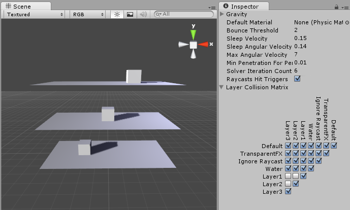
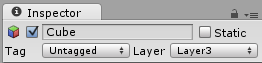
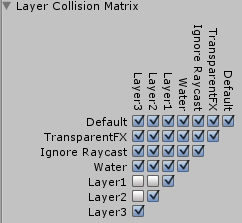

Layer-based collision detectionAn automatic process performed by Unity which determines whether a moving GameObject with a rigidbody and collider component has come into contact with any other colliders. More info See in Glossary is a way to make a GameObjectThe fundamental object in Unity scenes, which can represent characters, props, scenery, cameras, waypoints, and more. A GameObject’s functionality is defined by the Components attached to it. More info See in Glossary collide with another GameObject that is set up to a specific Layer or Layers.

Objects colliding with their own layer
The image above shows six GameObjects (3 planes, 3 cubes) in the Scene viewAn interactive view into the world you are creating. You use the Scene View to select and position scenery, characters, cameras, lights, and all other types of Game Object. More info See in Glossary, and the Layer Collision__A collision occurs when the physics engine detects that the colliders of two GameObjects make contact or overlap, when at least one has a rigidbody component and is in motion. More info See in Glossary Matrix__ in the window to the right. The Layer Collision Matrix defines which GameObjects can collide with which Layers.
In the example, the Layer Collision Matrix is set up so that only GameObjects that belong to the same layer can collide:
Layer 1 is checked for Layer 1 only
Layer 2 is checked for Layer 2 only
Layer 3 is checked for Layer 3 only
Change this to suit your needs: if, for example, you want Layer 1 to collide with Layer 2 and 3, but not with Layer 1, find the row for Layer 1, then check the boxes for the Layer 2 and Layer 3 colums, and leave the Layer 1 column checkbox blank.
Setting up layer-based collision detection
To select a Layer for your GameObjects to belong to, select the GameObject, navigate to the InspectorA Unity window that displays information about the currently selected GameObject, Asset or Project Settings, alowing you to inspect and edit the values. More info See in Glossary window, select the LayerLayers in Unity can be used to selectively opt groups of GameObjects in or out of certain processes or calculations. This includes camera rendering, lighting, physics collisions, or custom calculations in your own code. More info See in Glossary dropdown at the top, and either choose a Layer or add a new Layer. Repeat for each GameObject until you have finished assigning your GameObjects to Layers.

In the Unity menu bar, go to Edit > Project SettingsA broad collection of settings which allow you to configure how Physics, Audio, Networking, Graphics, Input and many other areas of your project behave. More info See in Glossary > Physics to open the Physics Manager window.
Select which layers on the Collision Matrix will interact with the other layers by checking them.

Did you find this page useful? Please give it a rating:
Is something described here not working as you expect it to? It might be a Known Issue. Please check with the Issue Tracker at issuetracker.unity3d.com.
Thanks for letting us know! This page has been marked for review based on your feedback.
If you have time, you can provide more information to help us fix the problem faster.
You've told us this page needs code samples. If you'd like to help us further, you could provide a code sample, or tell us about what kind of code sample you'd like to see:
You've told us there are code samples on this page which don't work. If you know how to fix it, or have something better we could use instead, please let us know:
You've told us there is information missing from this page. Please tell us more about what's missing:
You've told us there is incorrect information on this page. If you know what we should change to make it correct, please tell us:
You've told us this page has unclear or confusing information. Please tell us more about what you found unclear or confusing, or let us know how we could make it clearer:
You've told us there is a spelling or grammar error on this page. Please tell us what's wrong:
You've told us this page has a problem. Please tell us more about what's wrong:
Thanks for helping to make the Unity documentation better!